소방설비기사(전기분야) (2018-04-28 기출문제)
1과목: 소방원론
1. 다음의 소화약제 중 오존 파괴 지수(ODP)가 가장 큰 것은?
- 할론 104
- 할론 1301
- 할론 1211
- 할론 2402
(정답률: 64%)

2. 자연발화 방지대책에 대한 설명 중 틀린 것은?
- 저장실의 온도를 낮게 유지한다.
- 저장실의 환기를 원활히 시킨다.
- 촉매물질과의 접촉을 피한다.
- 저장실의 습도를 높게 유지한다.
(정답률: 90%)
3. 건축물의 화재발생 시 인간의 피난 특성으로 틀린 것은?
- 평상 시 사용하는 출입구나 통로를 사용하는 경향이 있다.
- 화재의 공포감으로 인하여 빛을 피해 어두운 곳으로 몸을 숨기는 경향이 있다.
- 화염, 연기에 대한 공포감으로 발화지점의 반대방향으로 이동하는 경향이 있다.
- 화재 시 최초로 행동을 개시한 사람을 따라 전체가 움직이는 경향이 있다.
(정답률: 92%)
4. 건축물에 설치하는 방화구획의 설치기준 중 스프링클러설비를 설치한 11층 이상의 층은 바닥면적 몇 m2 이내마다 방화구획을 하여야 하는가? (단, 벽 및 반자의 실내에 접히는 부분의 마감은 불연재료가 아닌 경우이다.)
- 200
- 600
- 1000
- 3000
(정답률: 53%)
5. 인화점이 낮은 것부터 높은 순서로 옳게 나열된 것은?
- 에틸알코올 ＜ 이황화탄소 ＜ 아세톤
- 이황화탄소 ＜ 에틸알코올 ＜ 아세톤
- 에틸알코올 ＜ 아세톤 ＜ 이황화탄소
- 이황화탄소 ＜ 아세톤 ＜ 에틸알코올
(정답률: 71%)
6. 분말소화약제로서 ABC급 화재에 적응성이 있는 소화약제의 종류는?
- NH4H2PO4
- NaHCO3
- Na2CO3
- KHCO3
(정답률: 90%)
7. 조연성 가스에 해당되는 것은?
- 일산화탄소
- 산소
- 수소
- 부탄
(정답률: 87%)
8. 액화석유가스(LPG)에 대한 성질로 틀린 것은?
- 주성분은 프로판, 부탄이다.
- 천연고무를 잘 녹인다.
- 물에 녹지 않으나 유기용매에 용해된다.
- 공기보다 1.5배 가볍다.
(정답률: 81%)
9. 과산화칼륨이 물과 접촉하였을 때 발생하는 것은?
- 산소
- 수소
- 메탄
- 아세틸렌
(정답률: 46%)
10. 제2류 위험물에 해당되는 것은?
- 유황
- 질산칼륨
- 칼륨
- 톨루엔
(정답률: 80%)
11. 물리적 폭발에 해당되는 것은?
- 분해폭발
- 분진폭발
- 증기운 폭발
- 수증기 폭발
(정답률: 76%)
12. 산림화재 시 소화효과를 증대시키기 위해 물에 첨가하는 증점제로서 적합한 것은?
- Ethylene Glycol
- Potassium Carbonate
- Ammonium Phosphate
- Sodium Carboxy Methyl Cellulose
(정답률: 70%)
13. 물과 반응하여 가연성 기체를 발생하지 않는 것은?
- 칼륨
- 인화아연
- 산화칼슘
- 탄화알루미늄
(정답률: 67%)
14. 피난계획의 일반원칙 중 Fool Proof 원칙에 대한 설명으로 옳은 것은?
- 1가지가 고장이 나도 다른 수단을 이용하는 원칙
- 2방향의 피난동선을 항상 확보하는 원칙
- 피난수단을 이동식 시설로 하는 원칙
- 피난수단을 조작이 간편한 원시적 방법으로 하는 원칙
(정답률: 84%)
15. 물체의 표면온도가 250℃에서 650℃로 상승하면 열 복사량은 약 몇 배 정도 상승하는가?
- 2.5
- 5.7
- 7.5
- 9.7
(정답률: 66%)
16. 화재발생 시 발생하는 연기에 대한 설명으로 틀린 것은?
- 연기의 유동속도는 수평방향이 수직방향보다 빠르다.
- 동일한 가연물에 있어 환기지배형 화재가 연료지배형 화재에 비하여 연기발생량이 많다.
- 고온상태의 연기는 유동확산이 빨라 화재전파의 원인이 되기도 한다.
- 연기는 일반적으로 불완전 연소시에 발생한 고체, 액체, 기체 생성물의 집합체이다.
(정답률: 82%)
17. 소화방법 중 제거소화에 해당되지 않는 것은?
- 산불이 발생하면 화재의 진행방향을 앞질러 벌목
- 방안에서 화재가 발생하면 이불이나 담요로 덮음
- 가스 화재 시 밸브를 잠궈 가스흐름을 차단
- 불타지 않는 장작더미 속에서 아직 타지 않는 것을 안전한 곳으로 운반
(정답률: 90%)
18. 주수소화 시 가연물에 따라 발생하는 가연성 가스의 연결이 틀린 것은?
- 탄화칼슘 - 아세틸렌
- 탄화알루미늄 - 프로판
- 인화칼슘 - 포스핀
- 수소화리튬 - 수소
(정답률: 73%)
19. 포소화약제의 적응성이 있는 것은?
- 칼륨 화재
- 알킬리튬 화재
- 가솔린 화재
- 인화알루미늄 화재
(정답률: 69%)
20. 위험물안전관리법령상 지정된 동식물유류의 성질에 대한 설명으로 틀린 것은?
- 요오드가가 작을수록 자연발화의 위험성이 크다.
- 상온에서 모두 액체이다.
- 물에는 불용성이지만 에테르 및 벤젠등의 유기용매에는 잘 녹는다.
- 인화점은 1기압하에서 250℃ 미만이다.
(정답률: 78%)
2과목: 소방전기회로
21. 다음 그림과 같은 브리지 회로의 평형조건은?(문제오류로 가답안 발표시 4번으로 발표되었지만 확정답안 발표시 모두 정답처리 되었습니다. 여기서는 4번을 누르면 정답 처리 됩니다.)
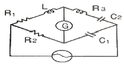
- R1C1=R2C2, R2R3=C1L
- R1C1=R2C2, R2R3C1=L
- R1C2=R2C1, R2R3=C1L
- R1C2=R2C1, L=R2R3C1
(정답률: 75%)
22. R-C 직렬 회로에서 저항 R을 고정시키고 XC를 0에서 ∞까지 변화시킬 때 어드미턴스 궤적은?
- 1사분면의 내의 반원이다.
- 1사분면의 내의 직선이다.
- 4사분면의 내의 반원이다.
- 4사분면의 내의 직선이다.
(정답률: 62%)
23. 비투자율 μs = 500, 평균 자호의 길이 1m의 환상 철심 자기회로에 2mm 의 공극을 내면 전체의 자기저항은 공극이 없을 때의 약 몇 배가 되는가?
- 5
- 2.5
- 2
- 0.5
(정답률: 45%)
24. 1개의 용량이 25W인 객석유도등 10개가 연결되어 있다. 이 회로에 흐르는 전류는 약 몇 A 인가?(단, 전원전압은 220v이고 기타 선로손실등은 무시한다.)
- 0.88 A
- 1.14 A
- 1.25 A
- 1.36 A
(정답률: 74%)
25. 분류기를 써서 배분을 9로 하기 위한 분류기의 저항은 전류계 내부저항의 몇 배인가?
- 1/8
- 1/9
- 8
- 9
(정답률: 74%)
26. R-L 직렬 회로의 설명으로 옳은 것은?
- v, i는 각 다른 주파수를 가지는 정현파이다.
- v는 i보다 위상이 θ = tan-1(wL/R)만큼 앞선다.
- v와 i의 최대값과 실효값의 비는
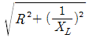
이다. - 용량성 회로이다.
(정답률: 65%)
27. 두 개의 코일 L1과 L2를 동일방향으로 직렬 접속하였을 때 합성인덕턴스가 140mH이고, 반대방향으로 접속 하였더니 합성 인덕턴스가 20mH이었다. 이때, L1 = 40mH이면 결합계수 K는?
- 0.38
- 0.5
- 0.75
- 1.3
(정답률: 61%)
28. 삼각파의 파형률 및 파고율은?
- 1.0, 1.0
- 1.04, 1.226
- 1.11, 1.414
- 1.155, 1.732
(정답률: 62%)
29. P형 반도체에 첨가되는 불순물에 관한 설명으로 옳은 것은?
- 5개의 가전자를 갖는다.
- 억셉터 불순물이라 한다.
- 과잉전자를 만든다.
- 게르마늄에는 첨가할 수 있으나 실리콘에는 첨가가 되지 않는다.
(정답률: 74%)
30. 그림과 같은 게이트의 명칭은?
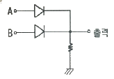
- AND
- OR
- NOR
- NAND
(정답률: 75%)
31. 어떤 코일의 임피던스를 측정하고자 직류전압 30V를 가했더니 300W가 소비되고, 교류전압 100V를 가했더니 1200W가 소비되었다. 이 코일의 리액턴스는 몇 Ω인가?
- 2
- 4
- 6
- 8
(정답률: 43%)
32. 저항 6Ω과 유도리액턴스 8Ω이 직렬로 접속된 회로에 100V의 교류전압을 가할 때 흐르는 전류의 크기는 몇 A인가?
- 10
- 20
- 50
- 80
(정답률: 68%)
33. 백열전등의 점등스위치로는 다음 중 어떤 스위치를 사용하는 것이 적합한가?
- 복귀형 a접점 스위치
- 복귀형 b접점 스위치
- 유지형 스위치
- 전자 접촉기
(정답률: 73%)
34. L-C 직렬 회로에서 직류전압 E를 t = 0에서 인가할 때 흐르는 전류는?
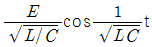
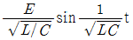
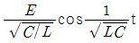
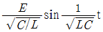
(정답률: 65%)
35. 피드백 제어계에 대한 설명 중 틀린 것은?
- 감대역 폭이 증가한다.
- 정확성이 있다.
- 비선형에 대한 효과가 증대된다.
- 발진을 일으키는 경향이 있다.
(정답률: 50%)
36. 어떤 계를 표시하는 미분 방정식이
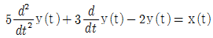
라고 한다. x(t)는 입력신호, y(t)는 출력신호라고 하면 이계의 전달 함수는?(문제오류로 가답안 발표시 1번으로 발표되었지만 확정답안 발표시 모두 정답처리 되었습니다. 여기서는 1번을 누르면 정답 처리 됩니다.)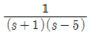
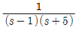
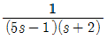
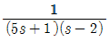
(정답률: 63%)
37. 측정기의 측정범위 확대를 위한 방법의 설명으로 틀린 것은?
- 전류의 측정범위 확대를 위하여 분류기를 사용하고, 전압의 측정범위 확대를 위하여 배율기를 사용한다.
- 분류기는 계기에 직렬로 배율기는 병렬로 접속한다.
- 측정기 내부 저항을 Ra, 분류기 저항을 Rs라 할 때, 분류기의 배율은
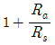
로 표시된다. - 측정기 내부의 저항을 Rv, 배율기 저항을 Rm라 할 때, 배율기의 배율은
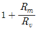
로 표시된다.
(정답률: 72%)
38. 논리식
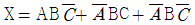
를 가장 간소화 하면?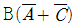
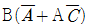
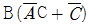
- B(A+C)
(정답률: 53%)
39. 원형 단면적이 S(m2), 평균자로의 길이가 l(엘)(m), 1m당 권선수의 N회인 공심 환상솔레노이드에 I(아이)(A)의 전류를 흘릴 때 철심 내의 자속은?
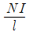
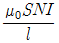
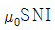
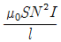
(정답률: 50%)
40. 무한정 솔레노이드 자계의 세기에 대한 설명으로 틀린 것은?
- 전류의 세기에 비례한다.
- 코일의 권수에 비례한다.
- 솔레노이드 내부에서의 자계의 세기는 위치에 관계없이 일정한 평등자계이다.
- 자계의 방향과 암페어 경로 간에 서로 수직인 경우 자계의 세기가 최고이다.
(정답률: 70%)
3과목: 소방관계법규
41. 소방기본법령상 소방본부 종합상황실 실장이 소방청의 종합상황실에 서면∙모사전송 또는 컴퓨터통신 등으로 보고하여야 하는 화재의 기준 중 틀린 것은?
- 항구에 매어둔 총 톤수가 1000톤 이상인 선박에서 발생한 화재
- 층수가 5층 이상이거나 병상이 30개 이상인 종합병원∙한방병원∙요양소에서 발생한 화재
- 지정수량의 1000배 이상의 위험물의 제조소∙저장소∙취급소에서 발생한 화재
- 연면적 15000m2이상인 공장 또는 화재경계지구에서 발생한 화재
(정답률: 59%)
42. 소방기본법령상 소방용수시설별 설치기준 중 틀린 것은?
- 급수탑 계폐밸브는 지상에서 1.5m 이상 1.7m 이하의 위치에 설치하도록 할 것
- 소화전은 상수도와 연결하여 지하식 또는 지상식의 구조로 하고, 소방용호스와 연결하는 소화전의 연결금속구의 구경은 100mm 로 할 것
- 저수조 흡수관의 투입구가 사각형의 경우에는 한 변의 길이가 60㎝ 이상, 원형의 경우에는 지름이 60㎝ 이상일 것
- 저수조는 지면으로부터의 낙차가 4.5m 이하일 것
(정답률: 67%)
43. 소방기본법상 소방본부장, 소방서장 또는 소방대장의 권한이 아닌 것은?
- 화재, 재난∙재해, 그 밖의 위급한 상황이 발생한 현장에서 소방활동을 위하여 필요할 때에는 그 관할구역에 사는 사람 또는 그 현장에 있는 사람으로 하여금 사람을 구출하는 일 또는 불을 끄거나 불이 번지지 아니하도록 하는 일을 하게 할 수 있다.
- 소방활동을 할 때에 긴급한 경우에는 이웃한 소방본부장 또는 소방서장에게 소방업무와 응원을 요청할 수 있다.
- 사람을 구출하거나 불이 번지는 것을 막기 위하여 필요할 때에는 화재가 발생하거나 불이 번질 우려가 있는 소방대상물 및 토지를 일시적으로 사용하거나 그 사용의 제한 또는 소방활동에 필요한 처분을 할 수 있다.
- 소방활동을 위하여 긴급하게 출동할 때에는 소방자동차의 통행과 소방활동에 방해가 되는 주차 또는 정차된 차량 및 물건 등을 제거하거나 이동시킬 수 있다.
(정답률: 69%)
44. 위험물안전관리법령상 위험물의 안전관리와 관련된 업무를 수행하는 자로서 소방청장이 실시하는 안전교육대상자가 아닌 것은?
- 안전관리자로 선임된 자
- 탱크시험자의 기술인력으로 종사하는 자
- 위험물운송자로 종사하는 자
- 제조소등의 관계인
(정답률: 65%)
45. 화재예방, 소방시설 설치∙유지 및 안전관리에 관한 법상 소방안전관리대상물의 소방안전 관리자 업무가 아닌 것은?(문제오류로 가답안 발표시 1번으로 발표되었지만 확정답안 발표시 모두 정답처리 되었습니다. 여기서는 1번을 누르면 정답 처리 됩니다.)
- 소방훈련 및 교육
- 자위소방대 및 초기 대응체계의 구성∙운영∙교육
- 피난시설, 방화구획 및 방화시설의 유지 및 관리
- 피난계획에 관한 사항과 대통령령으로 정하는 사항이 포함된 소방계획서의 작성 및 시행
(정답률: 78%)
46. 화재예방, 소방시설 설치∙유지 및 안전관리에 관한 법령상 소방용품이 아닌 것은?
- 소화약제 외의 것을 이용한 간이소화용구
- 자동소화장치
- 가스누설 경보기
- 소화용으로 사용하는 방염제
(정답률: 58%)
47. 화재예방, 소방시설 설치∙유지 및 안전관리에 관한 법령상 스프링클러설비를 설치하여야 하는 특정소방대상물의 기준 중 틀린 것은? (단, 위험물 저장 및 처리 시설 중 가스시설 또는 지하구는 제외한다.)
- 숙박이 가능한 수련시설 용도로 사용되는 시설의 바닥면적의 합계가 600m2이상인 것은 모든 층
- 창고시설(물류터미널은 제외)로서 바닥면적 합계가 5000m2이상인 경우에는 모든 층
- 판매시설, 운수시설 및 창고시설(물류터미널에 한정)로서 바닥면적의 합계가 5000m 이상 이거나 수용인원이 500명 이상인 경우에는 모든 층
- 복합건축물로서 연면적이 3000m2이상인 경우에는 모든 층
(정답률: 54%)
48. 소방기본법령상 특수가연물의 저장 및 취급기준, 중 다음 ( ) 안에 알맞은 것은?
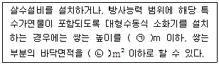
- ㉠ 10, ㉡ 30
- ㉠ 10, ㉡ 50
- ㉠ 15, ㉡ 100
- ㉠ 15, ㉡ 200
(정답률: 59%)
49. 위험물안전관리법상 위험시설의 설치 및 변경 등에 관한 기준 중 다음 ( ) 안에 알맞은 것은?
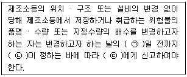
- ㉠ 1, ㉡ 행정안전부령, ㉢ 시∙도지사
- ㉠ 1, ㉡ 대통령령, ㉢ 소방본부장∙소방서장
- ㉠ 14, ㉡ 행정안전부령, ㉢ 시∙도지사
- ㉠ 14, ㉡ 대통령령, ㉢ 소방본부장∙소방서장
(정답률: 65%)
50. 화재예방, 소방시설 설치∙유지 및 안전관리에 관한 법령상 소방안전관리대상물의 소방계획서에 포함되어야 하는 사항이 아닌 것은?
- 예방규정을 정하는 제조소등의 위험물 저장∙취급에 관한 사항
- 소방시설∙피난시설 및 방화시설의 점검∙정비계획
- 특정소방대상물의 근무자 및 거주자의 자위소방대 조직과 대원의 임무에 관한 사항
- 방화구획, 제연구획, 건축물의 내부 마감재료(불연재료∙준불연재료 또는 난연재료로 사용된 것) 및 방염물품의 사용현황과 그 밖의 방화구조 및 설비의 유지∙관리계획
(정답률: 48%)
51. 소방공사업법령상 공사감리자 지정대상 특정 소방대상물의 범위가 아닌 것은?
- 캐비닛형 간이스프링클러설비를 신설∙개설하거나 방호∙방수 구역을 증설할 때
- 물분무등소화설비(호스릴 방식의 소화설비는 제외)를 신설∙개설하거나 방호∙방수 구역을 증설할 때
- 제연설비를 신설∙개설하거나 방호∙방수 구역을 증설할 때
- 연소방지설비를 신설∙개설하거나 살수구역을 증설할 때
(정답률: 71%)
52. 화재예방, 소방시설 설치∙유지 및 안전관리에 관한 법상 특정소방대상물에 소방시설이 화재안전기준에 따라 설치 유지∙관리되어 있지 아니할 때 해당 특정소방대상물의 관계인에게 필요한 조치를 명할 수 있는 자는?
- 소방본부장
- 소방청장
- 시∙도지사
- 행정안전부장관
(정답률: 52%)
53. 위험물안전관리법상 업무상 과실로 제조소등에서 위험물을 유출∙방출 또는 확산시켜 사람의 생명∙신체 또는 재산에 대하여 위험을 발생시킨 자에 대한 벌칙 기준으로 옳은 것은?
- 5년 이하의 금고 또는 2000만원 이하의 벌금
- 5년 이하의 금고 또는 7000만원 이하의 벌금
- 7년 이하의 금고 또는 2000만원 이하의 벌금
- 7년 이하의 금고 또는 7000만원 이하의 벌금
(정답률: 80%)
54. 화재예방, 소방시설 설치∙유지 및 안전관리에 관란 법상 소방시설등에 대한 자체점검을 하지 아니하거나 관리업자 등으로 하여금 정기적으로 점검하게 아니한 자에 대한 벌칙 기준으로 옳은 것은?
- 6개월 이하의 징역 또는 1000만원 이하의 벌금
- 1년 이하의 징역 또는 1000만원 이하의 벌금
- 3년 이하의 징역 또는 1500만원 이하의 벌금
- 3년 이하의 징역 또는 3000만원 이하의 벌금
(정답률: 68%)
55. 소방기본법상 소방활동구역의 설정권자로 옳은 것은?
- 소방본부장
- 소방서장
- 소방대장
- 시∙도지사
(정답률: 47%)
56. 소방기본법령상 위험물 또는 물건의 보관기간은 소방본부 또는 소방서의 게시판에 공고하는 기간의 종료일 다음 날부터 며칠로 하는가?
- 3
- 4
- 5
- 7
(정답률: 83%)
57. 화재예방, 소방시설 설치∙유지 및 안전관리에 관한 법령상 비상경보설비를 설치하여야 할 특정소방대상물의 기준 중 옳은 것은? (단, 지하구 모래∙석재 등 불연재료 창고 및 위험물 저장∙처리 시설 중 가스시설은 제외한다.)
- 지하층 또는 무창층의 바닥면적이 50m2이상인 것
- 연면적이 400m2이상인 것
- 지하가 중 터널로서 길이가 300m 이상인 것
- 30명 이상의 근로자가 작업하는 옥내 작업장
(정답률: 68%)
58. 화재예방, 소방시설 설치∙유지 및 안전관리에 관한 법상 특정소방대상물의 피난시설, 방화 구획 또는 방화시설에 폐쇄∙훼손∙변경 등의 행위를 한 자에 대한 과태료 기준으로 옳은 것은?
- 200만원 이하의 과태료
- 300만원 이하의 과태료
- 500만원 이하의 과태료
- 600만원 이하의 과태료
(정답률: 63%)
59. 소방시설공사업법령상 상주 공사감리 대상 기준 중 다음 ( ) 안에 알맞은 것은?
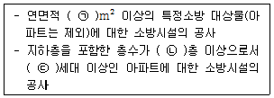
- ㉠ 10000, ㉡ 11, ㉢ 600
- ㉠ 10000, ㉡ 16, ㉢ 500
- ㉠ 30000, ㉡ 11, ㉢ 600
- ㉠ 30000, ㉡ 16, ㉢ 500
(정답률: 67%)
60. 위험물안전관리법상 지정수량 미만인 위험물의 저장 또는 취급에 관한 기술상의 기준은 무엇으로 정하는가?
- 대통령령
- 총리령
- 시∙도의 조례
- 행정안전부령
(정답률: 58%)
4과목: 소방전기시설의 구조 및 원리
61. 비상콘센트설비 전원회로의 설치기준 중 틀린 것은?
- 전원회로는 3상교류 380V 이상인 것으로서, 그 전원공급용량은 3kVA 이상인 것으로 하여야 한다.
- 전원회로는 각층에 2 이상이 되도록 설치할 것. 다만, 설치하여야 할 층의 비상콘센트가 1개인 때에는 하나의 회로로 할 수 있다.
- 비상콘센트용의 풀박스 등은 방청도장을 한 것으로서, 두께 1.6mm 이상의 철판으로 하여야 한다.
- 하나의 전용회로에 설치라는 비상콘센트는 10개 이하로 할 것. 이 경우 전선의 용량은 각 비상콘센트(비상콘센트가 3개 이상인 경우에는 3개)의 공급용량을 합한 용량 이상의 것으로 하여야 한다.
(정답률: 75%)
62. 불꽃감지기 중 도로형의 최대시야각 기준으로 옳은 것은?
- 30°이상
- 45°이상
- 90°이상
- 180°이상
(정답률: 72%)
63. 비상경보설비를 설치하여야 하는 특정 소방대상물의 기준으로 옳은 것은? (단, 지하구, 모래∙석재 등 불연재료 창고 및 위험물 저장 ㆍ 처리 시설 중 가스시설은 제외한다.)
- 공연장의 경우 지하층 또는 무창층의 바닥면적이 100m2이상인 것
- 지하층을 제외한 층수가 11층 이상인 것
- 지하층의 층수가 3층 이상인 것
- 30명 이상의 근로자가 작업하는 옥내작업장
(정답률: 47%)
64. 휴대용비상조명등의 설치기준 중 틀린 것은?
- 대규모점포(지하상가 및 지하역사는 제외)와 영화상영관에는 보행거리 50m 이내마다 3개 이상 설치할 것
- 사용 시 수동으로 점등되는 구조일 것
- 건전지 및 충전식 밧데리의 용량은 20분 이상 유효하게 사용할 수 있는 것으로 할 것
- 지하상가 및 지하역사에서는 보행거리 25m 이내마다 3개 이상 설치할 것
(정답률: 75%)
65. 객석내의 통로가 경사로 또는 수평로로 되어 있는 부분에 설치하여야 하는 객석유도등의 설치개수 산출 공식으로 옳은 것은?
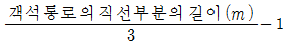
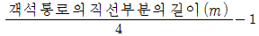
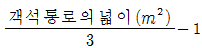
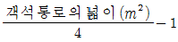
(정답률: 80%)
66. 객석유도등을 설치하지 아니하는 경우의 기준 중 다음 ( ) 안에 알맞은 것은?
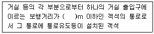
- 15
- 20
- 30
- 50
(정답률: 43%)
67. 비상벨설비의 설치기준 중 다음 ( ) 안에 알맞은 것은?
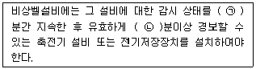
- ㉠ 30, ㉡ 10
- ㉠ 10, ㉡ 30
- ㉠ 60, ㉡ 10
- ㉠ 10, ㉡ 60
(정답률: 81%)
68. 누전경보기 변류기의 절연저항시험 부위가 아닌 것은?
- 절연된 1차권선과 단자판 사이
- 절연된 1차권선과 외부금속부 사이
- 절연된 1차권선과 2차권선 사이
- 절연된 2차권선과 외부금속부 사이
(정답률: 57%)
69. 피난기구의 설치기준 중 틀린 것은?
- 피난기구를 설치하는 개구부는 서로 동일 직선상이 아닌 위치에 있을 것. 다만, 피난교∙피난용트랩 ㆍ 간이완강기 ㆍ 아파트에 설치되는 피난기구(다수인 피난장비는 제외) 기타 피난 상 지장이 없는 것에 있어서는 그러하지 아니하다.
- 4층 이상의 층에 하향식 피난구용 내림식 사다리를 설치하는 경우에는 금속성 고정 사다리를 설치하고, 당해 고정사다리에는 쉽게 피난할 수 있는 구조의 노대를 설치하여야 한다.
- 다수인피난장비 보관실은 건물 외측보다 돌출되지 아니하고, 빗물 ㆍ 먼지 등으로부터 장비를 보호할 수 있는 구조이어야 한다.
- 승강식피난기 및 하향식 피난구용 내림식 사다리의 착지점과 하강구는 상호 수평거리 15cm 이상의 간격을 두어야 한다.
(정답률: 50%)
70. 소방시설용 비상전원수전설비에서 전력수급용 계기용변성기 ㆍ 주차단장치 및 그 부속기기로 정의되는 것은?
- 큐비클설비
- 배전반설비
- 수전설비
- 변전설비
(정답률: 66%)
71. 비상콘센트설비의 설치기준 중 다음 ( ) 안에 알맞은 것은?
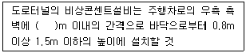
- 15
- 25
- 30
- 50
(정답률: 53%)
72. 자동화재속보설비 속보기 예비전원의 주위온도 충방전시험 기준 중 다음 ( ) 안에 알맞은 것은?
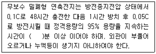
- 10
- 25
- 30
- 40
(정답률: 67%)
73. 비상방송설비 음향장치 설치기준 중 층수가 5층 이상으로서 연면적 3000m2를 초과하는 특정소방대상물의 1층에서 발화한 때의 경보 기준으로 옳은 것은?
- 발화층에 경보를 발할 것
- 발화층 및 그 직상층에 경보를 발할 것
- 발화층 ㆍ 그 직상층 및 기타의 지하층에 경보를 발할 것
- 발화층 ㆍ 그 직상층 및 지하층에 경보를 발할 것
(정답률: 60%)
74. 비상방송설비 음향장치의 구조 및 성능 기준 중 다음 ( ) 안에 알맞은 것은?
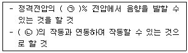
- ㉠ 65, ㉡ 자동화재탐지설비
- ㉠ 80, ㉡ 자동화재탐지설비
- ㉠ 65, ㉡ 단독경보형감지기
- ㉠ 80, ㉡ 단독경보형감지기
(정답률: 84%)
75. 무선통신보조설비를 설치하여야 할 특정소방 대상물의 기준 중 다음 ( ) 안에 알맞은 것은?
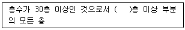
- 11
- 15
- 16
- 20
(정답률: 55%)
76. 자동화재탐지설비 수신기의 설치기준 중 다음 ( ) 안에 알맞은 것은?
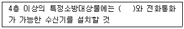
- 감지기
- 발신기
- 중계기
- 시각경보기
(정답률: 80%)
77. 노유자시설 지하층에 적응성을 가진 피난 기구는?
- 미끄럼대
- 다수인피난장비
- 피난교
- 피난용트랩
(정답률: 72%)
78. 자동화재탐지설비의 감지기 중 연기를 감지하는 감지기는 감시챔버로 몇 mm 크기의 물체가 침입할 수 없는 구조이어야 하는가?
- (1.3 ± 0.⑤)
- (1.5 ± 0.⑤)
- (1.8 ± 0.⑤)
- (2.0 ± 0.⑤)
(정답률: 63%)
79. 무선통신보조설비 증폭기의 비상전원 용량은 무선통신보조설비를 유효하게 몇 분 이상 작동시킬 수 있는 것으로 설치하여야 하는가?
- 10
- 20
- 30
- 60
(정답률: 61%)
80. 광전식 분리형 감지기의 설치기준 중 옳은 것은?
- 감지기의 수광면은 햇빛을 직접 받도록 설치할 것
- 광축(송광면과 수광면의 중심을 연결한 선)은 나란한 벽으로부터 1.5m 이상 이격하여 설치할 것
- 감지기의 송광부와 수광부는 설치된 뒷벽으로부터 0.6m 이내 위치에 설치할 것
- 광축의 높이는 천장 등(천장의 실내에 면한 부분 또는 상층의 바닥하부면) 높이의 80% 이상일 것
(정답률: 59%)